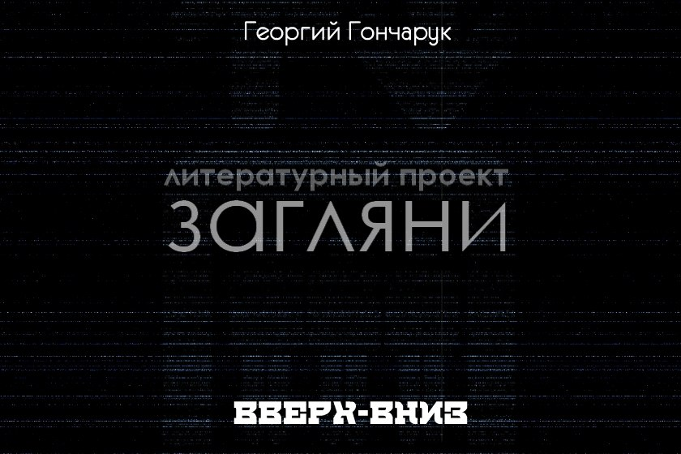

Георгий Гончарук: Вверх-вниз

Жанр: проза (психологический триллер)
О произведении: «Уважаемые граждане! Для вызова лифта имеются 2 кнопки. Нажмите верхнюю, если хотите ехать вверх, нажмите на нижнюю, если хотите ехать вниз. Нажмите сразу обе кнопки, если хотите услышать оценку вашего интеллекта.» Чей-то анекдот…
«Уважаемые граждане! Для вызова лифта имеются 2 кнопки. Нажмите верхнюю, если хотите ехать вверх, нажмите на нижнюю, если хотите ехать вниз.
Нажмите сразу обе кнопки, если хотите услышать оценку вашего интеллекта.»
Чей-то анекдот…
Я не глухой. Я не умственно отсталый. Я не сентиментальный. Я не психопат. Я не ребенок. Я не взрослый. Я не мужчина, хоть и позиционирую себя, как мужчина. Следовательно, Я не женщина. Я осознаю себя как личность. Я не могу показать это окружающим. Я не являюсь в глазах окружающих чем-то ценным. Я зажат. Я выполняю одну простую функцию. Я просто лифт. Я не думаю, что меня слышат и понимают…
***
Жизнь моя устроена предельно просто. Все, что Мне нужно делать – это глотать и выплевывать… существ? Не могу правильно назвать. А очень хотелось бы сказать. Так нужно. Для простоты буду называть их Окружающими. Честно сказать, Я не совсем их глотаю и выплевываю. Мне достаточно лишь открыть свои створки, и они сами залезают внутрь Меня. Из этого можно сделать логический вывод, что Окружающим нравится пребывать во Мне. Чуть не забыл упомянуть, что принимать Окружающих внутрь и выпускать их обратно – не единственная моя функция. Как Я уже сказал, Я зажат. Зажат внутри… горла? Да, скорее всего. Как у всего остального, у этого горла есть начало и конец. Поскольку внутри Меня периодически оказываются существа, условно именуемые Окружающими, Я после очень долгих раздумий решил, что и Я сам пребываю внутри… чего-то еще большего, чем Я сам. А это значит, что и внутри Окружающих тоже могут быть существа. Едва Я сделал это поразительно открытие, как мой интерес к… жизни возрос небывало. Если, думал тогда Я, Мне удалось прийти к такому пониманию, значит можно делать и другие открытия. Значит, можно постепенно расширять рамки сознания и набираться… опыта? Да, это слово словно само пришло ко Мне в… Куда ж оно пришло? Ладно, об этом потом подумаю… Если будет время… Таким образом, у Меня появилась вторая, дополнительная функция в жизни. А пока что Я вернусь к основной. Моей первостепенной задачей была перевозка Окружающих вверх и вниз. Вне зависимости от того, хочу ли Я этого, или нет. Да, в общем-то, Мне было все равно, нравится мне это или нет. Это была Функция. Эмоции во Мне пробуждало только накапливание опыта. Эмоции могли быть как положительные, так и отрицательные, в зависимости от того, удавалось Мне или нет совершить очередное открытие. Как Я уже упоминал, Я находился в горле некоего более крупного существа. Следовательно, было логично предположить, что это Существо глотает и выплевывает Окружающих. Мне не дано было понять, в чем состояла главная цель этих бесконечных перемещений туда и обратно. Я мог лишь констатировать факт и делать из этого свои собственные выводы. Я предположил, что Существо пробует Окружающих на вкус (сам Я не обладаю таким свойством, но хотелось бы). Причем тех, кто понравился, оно оставляет внутри, а тех, кто не приглянулся, оно, соответственно, отторгает. И вот тут стыкуюсь Я. Мне приятно осознавать, что Я являюсь частью чего-то. Потому что Я абсолютно не представляю себе, как бы Я существовал отдельно. Ведь тогда исчезла бы Основная Функция и Желание, пробуждающее Эмоции. Я бы не выдержал. Не знаю, было ли благодарно Мне Существо, потому что за все время моего существования оно никоим образом не показало свою любовь и благодарность. Но хотелось бы верить, что оно помнит о такой важной детали своего внутреннего устройства, как Я. Уж Я-то старался всегда показать свою искреннюю преданность… Не скрою, Мне было приятно, как на крыльях, взлетать вверх по горлу с парой-тройкой Окружающих внутри и ухать вниз, на дно. Все это означало движение. Движение – значит работа. Работа – значит польза для Существа. Польза для Существа – значит осознание собственной значимости. Осознание порождает импульс для жизни. А импульс, в свою очередь, порождает желание двигаться снова и снова. Такой замкнутый круг Меня вполне устраивал. Никакого вмешательства извне. Так нужно. Так будет всегда…
***
Окружающие с самого начала вызвали у Меня интерес. Но интерес поначалу исключительно рабочий, не вызывающий никаких эмоций. Или интерес от нечего делать, если так можно выразиться. Время их пребывания внутри было весьма недолгим, от силы минута. Но Мне хватало и этого времени для того, чтобы внимательно их рассмотреть и изучить. Это было даже в плюс, чтобы Я не забывал о своей Основной Функции.
Стоит признать, что Окружающие очень скоро стали моим главным источником накапливания опыта. И, как несложно догадаться, они тоже стали навевать Мне самые разнообразные Эмоции. Что Меня поразило, так это то, что Эмоции бывают не только положительными и отрицательными. Положительные, как оказалось, подразделяются на несколько видов. Те, в свою очередь, разветвляются на подвиды, а те – на множество дочерних видов, и так далее. То же самое и с отрицательными Эмоциями. Теперь Я знал, что Эмоциями можно еще и… играть. Примерять на себя, словно… костюм.
Также Я твердо знал, что Окружающие, как Я и Существо, тоже живые и осознают себя как личности. Это было нетрудно понять, ведь они были внутри Меня, а Я был внутри Существа. Так как Я осознавал себя, как живой организм и находился внутри живого Существа, было логично предположить, что и те, что во Мне, также живые. Как любят говорить Окружающие, все гениальное просто…
А они говорили. Не все, конечно, но говорили. Некоторые разговаривали с такими же, как они, кто-то бормотал себе что-то под… не знаю, под что. А иные даже болтали сами с собой, хотя никого другого во Мне не было (уж Я-то тому свидетель). Но в большинстве своем они просто молчали, глядя перед собой, вниз, по сторонам или вверх (не хотелось бы показаться эгоистом, но по всему получается, что смотрели они всегда на Меня, хоть многие и не подозревали об этом). Как Я уже упоминал, Окружающие являлись для Меня гланым источником опыта и познаний, поэтому Я не без оснований посчитал, что они тоже набирают опыт. Причем не просто набирают, но еще и пользуются им и охотно делятся с другими Окружающими. Поэтому они Мне очень нравятся. Как Желание, пробуждающее Эмоции.
Интересно, а они делятся опытом только в моем присутствии, или еще где-то? Но тогда получается, что ведомый Мне мир не ограничивается Существом (хотя до определенного момента Я был убежден в обратном). Значит, либо Существо тоже живет внутри… чего-то (от этого становится немного страшновато), либо в мире существует несколько Существ. Следовательно, и несколько таких, как Я…
***
Двух абсолютно одинаковых внешне Окружающих Мне видеть не доводилось (но это не значит, что их не существует). Кто-то был высоким, кто-то – низким; кто-то был широким, а кто-то был узким; кто-то был сутулым, а кто-то был прямым, как древко флага. Почему, кстати, большинство из них ничем не занимается, пока находится внутри Меня? Даже в течение минуты можно заниматься чем-то весьма интересным и увлекательным. Может, это особое строение их мышления? Может, они просто ленятся. И почему в своих разговорах никто из них (!) не упомянул Меня или Существо? Конечно, когда ты занят чем-то важным, отвлекать тебя как минимум невежливо. Но в том то и дело, что Окружающие в большинстве своем ничем заняты не были! Зато о тех, кто внутри них самих, некоторые вспоминают с нескрываемым удовольствием. Им может нравиться или не нравиться то, что они сегодня проглотили, но им непременно нужно обсудить это с другими и, естественно, в моем присутствии. Так Я думал до тех пор, пока Меня не осенила новая мысль. Мысль о том, что если окружающие вспоминают о том, что внутри них, а Я, соответственно, сейчас думаю о них самих, следовательно, и Существо тоже думает обо Мне! Вот это да! Значит, оно помнит о моей Работе! Помнит и, скорее всего, одобряет и любит Меня! С этого момента я проникся к Окружающим искренним уважением и стал относится к ним намного почтительнее, нежели раньше…
***
Как-то раз я получил новый опыт. Он заключался в том, что, если сначала ехать плавно и спокойно, а затем вдруг неожиданно затормозить, то Окружающие непременно упадут, и при этом выдадут из уст что-нибудь забавное. Мне самому это показалось очень забавным, особенно когда Окружающих внутри пять-шесть особей. Давка, толкотня, ругань, недоумение – словом, самое что ни на есть действие. Но затем случилось нечто, заставившее Меня по-новому взглянуть на некоторые вещи. Окружающие исчезли. Прошло несколько минут, прежде чем в меня зашел новый Окружающий. В тот момент Я подумал, что ему нужно наверх, то есть Существо его отвергло и собирается выплюнуть. Но не тут то было: он взял какой-то металлический предмет, подошел вплотную к стенке (моему внутреннему боку), вставил предмет в панель с разными кнопками (Я знал, что Окружающие пользуются этой панелью, чтобы отдать Мне команду отправки), прокрутил им несколько раз. Потом он вытащил крышку панели и… начал копаться в моих внутренностях. Вам будет приятно, когда кто-то посторонний роется в ваших внутренностях, даже не спросив вашего разрешения? Я думаю, ответ однозначный. Это явно не было похоже на передачу опыта, ведь для этого достаточно говорить при Мне. Следовательно, этот Окружающий собирается сделать Мне что-то нехорошее, что не принесет пользы. Я точно знал, что, как природа создала, так и должно быть. И постороннее вмешательство совершенно неприемлемо: нарушается жизненный баланс и гармония (это Я услышал из уст одного седоволосого старика, видно, академика). Поэтому Я решил во что бы то ни стало помешать этому нехорошему Окружающему копаться в моих внутренностях. Возможностей у Меня, скажем, было не очень много. По своему опыту Я знал, что могу раздвигать створки и перемещаться вверх-вниз по горлу Существа. Это было нужно для Основной Функции. Также Я умел издавать мелодичный звон в любой момент, но привык делать это во время окончания Пути, дабы Окружающим было удобнее путешествовать по миру Существа. Было еще одно свойство, которое Я не знал, к чему отнести, к Основной Функции или к Желанию, приносящему Эмоции. Я чувствовал, как через Меня все время проходит что быстрое, горячее и неуловимое. Из уст вышеупомянутого старца-академика Я знал, что у Окружающих есть нечто похожее (кажется, они называли это… кровью?). Это самое быстрое и горячее (это Я точно помню) особенно быстро текло в момент начала или конца путешествия, а также во время открытия/закрытия створок. Мне все время хотелось… поймать это хотя бы на несколько секунд. Может, это ничего и не даст, но даже Я не был обделен такой штукой, которую Окружающие называют любопытство. Ведь именно любопытство и побуждало Меня накапливать все больше и больше опыта. Зажать створками конечности Окружающего не было возможности потому, что тот находился вне их зоны досягаемости; звон тоже не поможет: не пожарная сирена, в конце концов. Поэтому оставался только один выход. Правда, Я так делал всего один раз, а именно тогда, когда резко остановился с кучей Окружающих. Но другого способа наказать наглеца Я не видел… …………………напрягся……….представил себе воображаемую ладонь Окружающего…………………….почувствовал быстрое и горячее…....представил, как если бы черпал его в ладонь, словно воду……………аккуратно поднес зачерпнутое туда, где висит лампа……….выпустил………………………………………………………… Треск, хлопок, вспышка и темнота……………………………………… Слышу, как матерится Окружающий…………………………………… Луч фонарика бьет в… простите, но иного слова, кроме как «лицо», Мне на ум не приходит…………………………………………………………. Окружающий сменил лампочку, и после этого Я его спокойно довез наверх. Надеюсь, что он понял мой поступок. В тот день Я твердо усвоил: в мире, кроме добра и пользы, есть зло и вред, которые легко могут обратиться вокруг тебя. И от этого нужно уметь защищаться всеми доступными способами. Надеюсь, Существо за все это не гневается на Меня…
***
Помню, был со Мной такой забавный случай: заходит в Меня молодая брюнетка (умение различать Окружающих по половому признаку было заложено в Меня еще с самого начала). Девушка красивая, привлекательная… Возможно, Вы поинтересуетесь, а почему это Я говорю о таком? Но Я же личность. Существо тоже личность. Эта девушка тоже личность. Следовательно, мы вроде как одного вида, хоть и разного облика (не доводилось видеть Существо, но желание просто огромное). Ладно, отвлеклись… Тогда Я думал о запахах. Дело в том, что некоторые окружающие (в основном, молодые девушки) очень часто говорили о том, что и как воняет, а что, наоборот, просто таки опьяняет и захватывает дух; какие ароматы бывают у пищи, а какие – у цветов; чем пахнут мужчины или даже собаки… Забавно, но эта тема заинтересовала и Меня. Ведь если Я обладаю зрением и слухом (признаки личности, между прочим), то почему это Я должен быть обделен… нюхом? Удивившись такой несправедливости, Я захотел поэкспериментировать на вот этой девушке, благо она не замечает. Действительно, как можно заподозрить то, в чем находишься, в том, что оно тебя обнюхивает? Старым добрым способом Я вообразил себе… да, нос Окружающего. Получилось, что уже неплохо… Постарался… нацелиться на девушку и… Ничего не получилось. Нет запаха… Непорядок. Я попробовал еще… И снова неудача! Видно, Я делаю что-то не так… А надо торопиться, скоро прибываем вниз! Тут уж Я не вытерпел и напрягся до такой степени, что быстрое и горячее заструилось во Мне самым настоящим кипятком. Замигала лампа… Еще чуть-чуть!!! Пол начинает заметно подрагивать… Воооооооооот… ТАК!!! Раздался громкий треск: это в потолке образовалась широкая трещина, кусок деревянной обшивки отвалился и упал прямо на макушку брюнетке. Девушка пискнула, коротко и звонко. Нет, не работать ей звуковой сигнализацией во Мне. У меня получается намного мелодичнее… Хорошо еще, что Мне хватило ума самому удержать угасающее сознание и не остановиться. Не то быть продолжению концерта… Брюнетка тем временем опасливо оборачивалась вокруг своей оси, словно опасаясь, что сейчас еще что-то хлопнет, треснет, отвалится или отключится. Слава Существу, Я спокойно ехал вниз, безо всяких эксцессов. Наконец, мы доехали. Мелодичный звон. Я услужливо, даже трепетно раздвинул створки. Девушка осторожно вышла из Меня, мимолетным движением поправила растрепавшиеся волосы, постаралась придать лицу более-менее спокойное выражение (хотя получилось не очень). Дрожащей походкой, словно птенец, делающий первые шаги, двинулась вперед. А Я так и остался висеть с бокалом эмоционального коктейля из удивления, испуга и недоумения в воображаемых руках…
***
Это случилось где-то около полтретьего ночи. Я, как и все Окружающие, мирно отдыхал после работы. Сегодня (вернее, вчера), похоже, у Существа был немыслимо загрузочный день. Поступлений и отступлений в общей сумме было не меньше шестидесяти. Причем Окружающие, все как один, торопились либо попасть в мир Существа, либо наоборот – покинуть его. Чем было вызвано такое небывалое оживление, Я никак не мог понять… Тем не менее, на этих мыслях не стоило отвлекаться: Функция оставалась для Меня незыблемой, и выполнять ее кроме Меня было больше некому. В тот день Я ощутил тоже самое, что обычно чувствует гантеля после тренировки спортсмена, ребенок после сотого размаха на качелях: меня как будто… укачивало. Как на корабле во время шторма, только здесь полегче, потому что нет вероятности падения. Вверх-вниз. Вверх-вниз. Вверх-вниз. Вверх-вниз. Вверх-вниз… Но еще хуже было другое: количество пассажиров. Они, как рой пчел, влетали внутрь Меня, заполняя все пространство чуть ли не до конца. На первых подъемах и спусках Я еще стоически вытягивал эти гудящие, галдящие, смеющиеся, плачущие, орущие и поющие кома. Но потом с каждым разом становилось все тяжелее. В связи с этим у Меня почему-то возникла аналогия с мамой-пеликаном, которая в течение всего дня без устали летала туда-сюда от гнезда к морю, от моря к гнезду, с полным клювом рыбы, чтобы прокормить своих ненасытных и тоже вечно орущих и галдящих птенчиков. Чьей прожорливости смогут позавидовать только страусы. Вверх-вниз. Вверх-вниз. Вверх-вниз. Туда-сюда. Туда-сюда. Гнездо-море. Море-гнездо. Гнездо-море. Море-гнездо… На последних подъемах-спусках Я неожиданно даже для самого себя начал делать то, чего никогда прежде себе не позволял – молиться Существу, чтобы оно позволило отдохнуть хотя бы десять минут. Я не умел плакать. Но если бы умел, то, непременно, затопил бы все горло Существу и дал ему понять, что Я испытываю в данный момент. Но Оно было глухо к моим молитвам. Вероятно, оно было настолько поглощено процессом приема внутрь и выпуска обратно, что даже не обращало внимания на призывы своей самой важной детали. Пожалуйста, дай отдых! Ведь всему же есть предел! Хотя бы пять минут… хотя бы две… Ведь если Я умру (при этой мысли я содрогнулся, из-за чего едва остановился на полпути), кто будет перевозить Окружающих? Кто будет помогать Тебе в таком важном… нет, даже архиважном деле?.. Не знаю, как Мне удалось вытерпеть до конца… поток Окружающих к одиннадцати вечера утихал, подобно раскату грома, пока не исчез окончательно. Самая близкая аналогия, которая подошла бы к описанию мое внутреннего состояния в тот момент – до конца выжатая тряпка. Не осталось ни капли силы и уверенности. Уверенности в том, что Я смогу завтра (или уже сегодня, от усталости Я перестал ориентироваться во времени) принять хотя бы одного пассажира и перенести его вверх или вниз… И мысли о том, что будет со мной дальше, представлялись мне сплошным дымным облаком, внутри которого нельзя не то что разглядеть нечто, но и самого себя увидеть. Можно лишь предугадывать, звать, не зная, ответит ли кто, и желать только одного – лишь бы не умереть. Иначе Я больше ничем не смогу помочь Существу. И не знаю, что будет с Ним после всего этого. Давимый всей этой непосильной неизвестностью, Я уснул… Это случилось где-то около полтретьего ночи. Сначала Мне показалось, что Я все еще сплю. Снилось Мне, что у Меня выросли большие ангельские крылья и что я парил высоко-высоко. Внизу простиралось… нечто огромное, красочное и бесконечно прекрасное. Казалось, что какой-то безумный мастер залил все краски в одно большое ведро, а затем размахнулся и вылил получившееся месиво вниз. Даже опыта, накопленного за все годы от Окружающих, не хватало, чтобы описать все то, что получилось в результате. Это было совершенно новое для Меня, непривычное, завораживающее воображение, сознание и каждый уголок души. Наверху разлилось еще удивительнее: только два цвета, чарующе белый на фоне глубокого синего, но сколько форм было у этого белого! Я не успевал разглядеть каждый рисунок, образованный чем-то… расплывчатым и… все-таки расплывчатым. Память выуживала самые разнообразные образы при нацеливании взгляда на то или иное пятно из белого нечто: овечка, цветок хризантемы, веселый щенок, бантик, колесо автомобиля, циферблат, чья-то рука, кепка, женские (да, именно женские) губы… А посреди всего этого фантастического сборища висело еще одно пятно. Самое большое. Сияющее. Золотое. И, несомненно, живое… Оно звало Меня. Звало с собой. И Я слышал Его. И Я знал, куда Мы полетим. Я видел в нем все самое прекрасное, что когда-либо доводилось видеть. Я чувствовал – это облако – мой смысл жизни, моя цель жизни. Это облако – сама моя Жизнь. Я распростер свои крылья во всю ширь и взметнулся к Облаку так быстро, как только смог. И тут Оно мигнуло и исчезло. Просто исчезло. Как перегоревшая лампочка. Но почему? Куда? Ведь мы же… Неожиданно Я опять услышал зов. Где? Где же? Наконец Я Его снова увидел. Облако висело там же, где в предыдущий раз, только значительно выше. Во мне снова взбурлила радость. Оно не ушло! Взмах крыльями – и вот я снова лечу. Вот уже совсем близко! Еще чуть-чуть… Снова мигнуло и исчезло… И тут же возникло в километре надо мной. «Ведь в этом, вне всяких сомнений, должна лежать некая логика»,- мелькнула мысль. Может быть, Облако радо встрече со Мной и хочет поиграть в салочки? Или Оно таким своеобразным способом куда-то Меня ведет? Во всяком случае, Я непременно должен лететь вслед за Ним, ведь это мой смысл, моя жизнь, моя функция… Так и пошло: Я на невообразимой скорости взмываю к Золотому Облаку и почти что касаюсь его, а Оно в последний момент пропадает из виду, чтобы вновь появиться еще выше. Еще выше, еще… Вверх. Вверх. Вверх. Вот мы уже над морем белоснежных пятен разнообразной формы. Оно стремительно уменьшается в размерах, сужаясь в одну тонкую и воздушную линию. Для Меня уже не существует ничего, кроме Облака. Вокруг только завораживающая синева бесконечности. Кажется, до нее можно достать… чем? Рукой? Крыльями? Да важно ли это?! Но вот Облако остановилось в очередной раз, и Я снова разогнался до… нет, уже не просто немыслимой скорости. До самого настоящего Предела… Эти несколько секунд пронеслись так стремительно, что Я даже не удивился, поняв, что уже подлетел к Облаку. Удивление пришло в тот момент, когда Я также понял, что Оно не исчезло. Просто зависло надо Мной во всем своем бесконечном Величии, как… Солнце над маленькой, жалкой планетой. А еще Оно перестало звать Меня. И теперь оставалось только одно. Я представил себе руку Окружающего, протянул ее к невесомой поверхности Облака и коснулся… В первый момент ничего не изменилось. Абсолютно. Я подумал, что нужно, наверное, что-то сказать, как вдруг меня охватило пламя. Моментально распространилось по всему телу и… Боль! Нет! Почему?!! Впилась, подобно миллионам раскаленных докрасна спиц, в каждую клетку, в каждый уголок души! Облако пропало. Но ведь Я сделал все, что нужно! Как можно… Теперь синяя пустота казалась Мне страшной и бесконечной клеткой, из которой невозможно выбраться! Даже думать, смотреть на это кажется хуже смерти… Хотелось кричать, визжать, извиваться, брыкаться, кусать самого себя и жаждать быстрой смерти, лишь бы не видеть весь этот синий немой ужас… Последнее, что Я увидел – самого себя, целиком охваченного золотым пламенем, медленно падающего вниз, туда, где раскинулось бескрайнее море расплывчатых фигурок, слепленных из белого нечто… В этот момент сквозь толщу сна ко Мне прорвался сигнал вызова. Это случилось где-то около полтретьего ночи.
***
Нет, сигнал вызова Мне не снился. Даже когда Я проснулся, он все равно продолжал назойливо, как комар, пилить слух. В другой раз Я бы с удовольствием откликнулся на вызов и с не меньшим удовольствием перевез пассажиров. Но только не в этот момент, когда, казалось бы, силы только начали возвращаться в полной мере! Что же Существо задумало на этот раз? Не скрою, в последнее время Оно ведет себя, по меньшей мере, странно. А по большей мере, так и вовсе пугающе… Метры пустоты и тьмы пролетают мимо в гробовом молчании, игнорируя мой немой вопрос – что происходит? Действительно, как Мне бы хотелось сейчас увидеть Существо. Увидеть и впервые серьезно поговорить обо всем, что беспокоило Меня всю жизнь… Но как до Него достучаться? И можно ли вообще достучаться до того, внутри чего, собственно, находишься всю сознательную жизнь? В памяти еще были свежи впечатления от странного сна. Мельчайшие и побольше детали безвозвратно стерлись, но вот самое яркое закрепилось, как заноза в пальце Окружающего: белые пятна на фоне синей бесконечности, огромное Золотое Облако, игра с ним в догонялки и неожиданный финал в виде самовозгорания и падения вниз, на землю. Вверх. Вверх. Вверх. Скоро прибытие, неведомые пассажиры и отправка вниз. Вниз. Вниз. Вниз. Окружающие говорят, что сны являют собой результат бурного смешения информации, накопленной за весь день, проанализированной и отсортированной. Чем-то напоминает естественный отбор или, грубо говоря, кастинг на участие в фильме: самые яркие, ключевые и запомнившиеся воспоминания и эмоции получают некое место в показе «внутримозгового кино». Вот и остановка. Ладно, нужно постараться быть вежливым и услужливым хотя бы минуты на две. Просто довезти Окружающих вниз, потому можно будет вернуться к размышлениям и уснуть на оставшееся время. Глядишь, и силы накопятся для нового рабочего дня во благо Существа… Мужчина и женщина, если говорить коротко и просто. Оба одеты в пижамы, выглядят бодро, даже слегка улыбаются… Стоп! Пижамы? В три часа ночи? На моей памяти еще ни один Окружающий не спускался в мир Существа в столь простых и… непубличных нарядах. Едва Я перестал скептически относится к столь позднему времени вызова, как при виде пижам сомнение ворвалось обратно в мое сознание, даже не постучавшись. Ладно, что хочет а что не хочет Существо, решать ему и только ему. Мое дело – доставка. Зашли. Створки медленно, словно нехотя, сомкнулись. Тронулись. Так, на чем Я остановился? Ах, да! Еще одно сходство снов с миром кино (кстати, еще одна часто обсуждаемая Окружающими тема) – это подразделение на категории типа «интересно» и «скучно». Ко второму относится, как правило, подавляющее большинство. Да и думать об этом большинстве тоже, прямо скажу, неинтересно. Другое дело, интересные сновидения. Их всегда отличает наличие чего-то цепляющего, шокирующего, захватывающего, остроумного или гениального. Даже такое понятие есть – изюминка. Именно эта изюминка и позволяет в полной мере… Мысли прервал неприятный скрежет, затем последовавшие за ним протяжный гул и, наконец, мертвая тишина. Однако створки открываться не спешили, хотя, по моему мнению, это уже должно было быть возведено в ранг рефлексов. Это еще что такое? Чтобы створки не работали? Да это же… Только сейчас Я сообразил переключить зрение с внутренней стороны стенок на внешнюю сторону. Так… Мы что, остановились на полпути? Вокруг сплошной сумрак, но на стенках горла можно разглядеть всякие хрящики и сосуды. Ясно. Встали. Но еще более странным было то, что встал не Я. Меня остановили. Снова перевел взгляд внутрь себя. Успел заметить, как мужчина отводит указательный палец от кнопки «STOP». Теперь скепсис и сомнение сменились пугающей пустотой недоумения. Что происходит? Почему остановились? Вернее, почему велели остановиться? С минуту не происходило ровным счетом ничего. Слышно было только дыхание пассажиров. Прерывистое дыхание… А еще они как-то странно смотрели друг на друга: слишком… пристально, что ли? И с нежностью. Я пока что был не очень силен в психологии и особом складе поведения Окружающих, но сейчас был твердо уверен в том, что зрение Меня не обманывает. Но что же будет дальше? Не могут же они тупо стоять и глазеть друг на друга как… Он подошел к ней вплотную, слишком близко, чтобы говорить о каком-то приличии. Она не отстранилась, что говорило о том же… Он наклонил свою голову к ней так, что расстояние между их лицами изничтожилось. Медленно, как в замедленной съемке, его губы приближались с спелым и сочным, надо сказать, губам девушки. Наконец, они сомкнулись… Вот теперь Я абсолютно перестал понимать, что происходит. Реальность для Меня полностью растворилась, мысли исчезли в глубине сознания, и все мое внимание полностью сосредоточилось на этих двух Окружающих, делающих непонятное и… неестественное. Я пытался уцепиться хоть за какую-то мысль, даже самую медлительную, но все попытки осознать и понять моментально таяли, как куски масла на раскаленной сковороде. Губы их то размыкались, то снова замыкались, словно мои створки. Казалось, они могли совершать этот непонятный процесс бесконечно долго. Неужели им это нравится? Похоже, что да. А вот Я совсем не разделял их чувств просто потому, что не мог уловить смысла в этом. Время растянулось, как жевательная резинка в руках неразумного младенца. Нет, Я не торопился возобновить путь вниз: Окружающие преследуют некую цель и, если им понадобится спуститься вниз (или, что маловероятно, обратно вверх), они дадут знать. Между тем движения мужчины и женщины стали более резкими и… да, масштабными. Они начали елозить руками по телу друг друга, пальцы то сгибались, то разгибались, а смыкания/размыкания губ приобрели большую скорость. Ладно, допустим, ранее присутствовал какой-то смысл, и они получали некое удовольствие. Но зачем им понадобилось ускоряться? Они что, торопятся куда-то? Нет, не похоже, чтобы они вообще куда-то торопились. Значит, здесь тоже есть смысл и присутствует некая идея… Размышления прервал глухой стук. Теперь они валялись на полу, но это никоим образом не мешало их странному совместному процессу. Скорее наоборот: падение словно вдохнуло в них обоих еще больше сил и остервенения. Теперь они касались губами других мест на лицах, причем никакой закономерности в этом не было. Но и этого показалось мало: пассажиры начали корчиться и извиваться на полу, совсем не волнуясь о том, что там может оказаться грязь и что они могут заразиться и заболеть. Все это время мужчина лежал на женщине, словно восседая на троне… Тела их покраснели, как созревшие на солнце помидоры. Со стороны это выглядело теперь безумно и… наверно, дико. Еще одним аргументом для доказательства моего мнения служил просто таки звериный хрип, с маленькими интервалами издаваемый мужчиной. А со стороны женщины раздавался какой-то непонятный стон. Но стон не от отчаяния, не от боли и не от злости. Это было нечто другое, ранее не имевшее места в моей памяти. То, что назвать нормальным явлением для Окружающего, с моей точки зрения, не поворачивался язык. Да, пожалуй, язык не повернется назвать нормальным вообще все то, что сейчас происходило внутри Меня. В любом случае, ранее такого Я никогда не видел. Но Я лицезрел это сейчас, и Мне это не нравилось с каждой минутой все меньше и меньше. Кого-то Мне напоминал этот живой, красный, извивающийся и хрипяще-стонущий клубок… Кого-то мерзкого, жалкого и отвратительного. А не червя ли случайно? Вернее, двух маленьких скользких червяков, сцепившихся в безумной и бессмысленной схватке за… что? В том то и дело, что бороться не за что. Ведь итогом борьбы все равно станет общее поражение… и одновременно общая победа. Черви через относительно небольшой отрезок времени сожрут друг друга и издохнут. И все. И не боролись ли сейчас, в данный момент, мужчина и женщина, что дали Мне команду остановиться на середине маршрута? Если это так, то нет никакого практического смысла продолжать извивание. Когда я, выражаясь языком Окружающих, открыл глаза, выныривая из дум, я услышал, как стоны девушки слились в один бесконечный и страшный вой. А мужчина окончательно превратился в зверя в пижаме. Кажется, будто он трансформировался в одно сплошное цветное пятно, издававшее… самое неподдельное животное рычание. Так длилось несколько минут, пока не… Я постараюсь выражаться как можно спокойнее, потому что все то, что происходило дальше, смело можно было бы отредактировать в киносценарий для съемок какого-нибудь триллера… Прошло несколько мгновений, прежде чем, я понял, что движения мужчины и женщины стали быстрыми, резкими и какими-то… упорядоченными. Да, хаос действий исчез полностью, рыки и вои куда-то пропали, осталось только явственно слышное дыхание обоих. С того угла обзора, который выбрал Я, было видно, как мужчина… почему-то скачет на женщине, что навело на мысль о таком виде спорта Окружающих, как родео, когда всадник пытается удержаться на взбешенном быке или лошади. Только здесь взбешенным казался больше наездник, нежели скакун… Вверх-вниз. Вверх-вниз. Вверх-вниз. Я тоже вверх-вниз еду… Только в этот момент Я осознал, что спокойно наблюдаю за все этой вакханалией, абсолютно ничего не предпринимая. Как будто это было в порядке вещей. Сознание пробудилось, как медведь после зимней спячки. Мало того, что они нарушили Мой привычный порядок работы, заставив остановиться (чего, кстати, еще никто никогда не делал), так еще и устроили бессмысленное и… да, отвратительное представление с единственным зрителем – со Мной! О, Существо! За что ты Меня так наказываешь? В чем Я провинился? Чем Я заслужил такое несправедливое отношение ко Мне? И опять, как всегда, нет никакого ответа… Нет! Я существую для того, чтобы выполнять Основную Функцию – перевозить Окружающих вверх и вниз, тем самым принося пользу Существу! И никакие трудности не сломят мой дух, как бы мерзко и дико они не выглядели! Я буду делать все, чтобы преодолевать их, и буду по заслугам карать тех, кто эти трудности создает на моем жизненном пути! Так нужно… Я сконцентрировался, собрал как можно больше напряжения того самого быстрого и горячего вокруг лампы под потолком и выпустил… Хлопок – и лампа мгновенно погасла. Я рассчитывал, что в этот момент пассажиры… нет, животные в обличье пассажиров, прекратят… Но нет, было слышно, как пыхтение и скачки только усилились. Хорошо. Тихо и медленно, чтобы они не заподозрили (хотя, мне кажется, они и сотню бульдозеров сейчас не услышат, а уж вибрации у них и самих хватало с избытком), поехал наверх. Можно было бы и чуть побыстрее, но осторожность не помешает никогда. Доехал. Это стало понятно по тому, как Я уперся во что-то очень твердое. Верх горла, дальше уже нельзя. Я собрался с духом, представил, как если бы вдохнул полную грудь воздуха (Окружающие часто так делают при Мне). Ну что ж, Существо, пришло время снова доказать Тебе мою преданность, наказав бесстыжих осквернителей, подло пробравшихся внутрь Тебя и, несомненно, затевавших что-то недоброе и мерзкое. Мысленно дал обратный отчет от пяти. Звуки с их стороны не утихли. Пять. Четыре. Три. Два. Один… С характерным свистом Я отпустил тросы, предварительно вылив максимальное количество напряжения в начальную скорость, и полетел вниз. Страшно ли Мне было? Ничуть. Скорость быстро набиралась. Окружающие, конечно же, почувствовали сильный толчок (их же еще при начальном рывке подбросило; правда мужчина отчего-то остался… прицеплен к женщине), и моментально прекратили извиваться и корчиться. Женщина пискнула (уже неплохо), и попыталась встать, но выбраться из-под мужчины оказалось не так-то просто. Дно стремительно приближалось, и мужчина, кажется, только сейчас осознав, что происходит, вскрикнул, встал и осмотрелся, надеясь найти то ли панель управления Мной, то ли свои собственные трусы и штаны. И в том и в другом он удачно провалился из-за кромешной тьмы, окутавшей его и девушку - Что происходит? – истошным голосом спросила Окружающая. Хотел бы Я сейчас спросить об этом самого себя… Но долг превыше здравого смысла, верно? В этот удар Я вложил всю свою ненависть, все свое презрение и отвращение к своим пассажирам. И Я постарался на славу: даже Я слегка смялся от того толчка вибрации, который передал смачный удар обо дно горла Существа. Мне не нужно было заглядывать внутрь себя, чтобы знать, что удар об пол получился достаточно болезненным для обоих. Тут же раздались крики и жалкие стоны Окружающих. Хотелось уже включить освещение, чтобы взглянуть на результат, но Мне очень хотелось приложить обоих к потолку. Чем я не преминул заняться. Новый разгон. Новые вскрики. Всего несколько бешеных мгновений и… еще один удар. Теперь к стонам прибавились всхлипывания женщины. Но они, Я знаю, ничуть не оправданы. Все это ничтожные поскуливания загнанного в угол подлого и бесчестного зверька, по своей жадности попавшегося в им же спрятанный капкан. Следующий спуск вниз Я уже совершал спокойно, на обычной скорости, согласно Основной Функции. Только теперь Я позволил себе включить внутренний свет. И ничуть не удивился и не испугался, увидев то, что Мне открылось: пол и потолок были частично заляпаны кровью; одежда разбросана в разные стороны; в боковых стенах были заметны небольшие трещины; на полу видны куски осыпавшейся обшивки. А посреди всего этого хаоса лежат два изувеченных, окровавленных, дергающихся от боли и всхлипываний и абсолютно голых тела. Тела мужчины и женщины. Аккуратная остановка. Мелодичный звон. Непринужденно и с нескрываемым почтением раздвигаются створки… Что же вы лежите, господа? Ваша остановка… Что Мне запомнилось отчетливо – это перекошенное лицо дежурного Окружающего, со смесью ужаса и отвращения заглядывающего внутрь, осторожно осматривающего тела, дрожащими пальцами набирающего чей-то номер на телефоне… А еще застывшее, словно восковая маска, выражение унижения на лице женщины. Женщины, попавшей в собственные силки… Кровь смоется, но память останется. Надеюсь, Существо простит Меня за все это…
***
Я уже говорил, что Мне никогда не были понятны помыслы и желания Существа, и готов повторить это еще раз. Вне всяких сомнений, Оно бесконечно мудро и, вероятно, способно на вещи, выходящие далеко за пределы моего, надо сказать, немалого воображения. Вероятно? Да, именно так. Вы, наверное, думаете, что Я уже принимаю на веру то, что придумываю и логически выстраиваю сам? Ни в коем случае! Я никогда не позволял себе рассуждать о чем-то, что слышу или узнаю впервые, как о незыблемом и неопровержимом… Нет доказательств – нет истины! Этот принцип кому-то покажется слишком тираническим и жестоким, но для Меня он является наиболее подходящим вариантом из всех существующих. Вот вы видите перед собой яблоко. Вы можете точно описать его, просто потому, что вот оно, перед вами: небольшое и некруглое, как принято считать; красное (допустим, что сегодня красное), отражающее солнечный свет, притягательное… Вот вас спрашивают, что перед вами. Вы недоумеваете: что за глупый вопрос? И, конечно же, отвечаете: «Яблоко. Красное яблоко». Но будете ли вы готовы к тому, что вас спросят: «А почему вы считаете, что именно яблоко?» Логичным ответом здесь было бы что-то вроде «Потому что оно имеет все внешние признаки яблока, и красного конкретно, ведь цвет-то красный…» - А откуда вы знаете, что яблоко обладает именно такими признаками? - Ну… это все знают… - Кто это такие все? - Все люди. - Правильно говорить – Окружающие. - Нет, вообще-то мы именуем себя людьми, если вы не в курсе… - От кого это название пошло? - Из прошлого. Из предыдущих поколений. А туда пришло из более прошлых поколений. - А что является истоком? - Я не знаю… - Вот. Вы опираетесь на прошлое, но сами не знаете, что было началом в том прошлом. Как можно опираться на пустоту и при этом верить в то, что пустота и есть опора? - В том то и дело, что мы верим в то, опора есть. - Да уж… Вера. И как же далеко можно уехать на этой вере? Вы, Окружающие, большинство суждений, явлений, фактов и убеждений переносите только на веру. Если вы верите, доказательства абсолютно не нужны, верно? Ой, простите за каламбур… - Доказательства нужны только там, где присутствует практика и проистекающая из нее практическая польза… - Следовательно, раз вы называете себя людьми, опираясь исключительно на веру, вы допускаете отсутствие в этом практической пользы? - Но можно же искать эти источники… - Да или нет? - Значит, да… - Выходит, что наименование себя и себе подобных носит сугубо эстетический и духовный характер, и является привилегий любого, подобного вам. А так как это является привилегий, следовательно, право выбора названия – точно такая же привилегия, доступная каждому из вас. И никакие рамки и ограничения на нее не накладываются, так? - По всему выходит, что да. - Значит, мое право называть вас Окружающими вполне обосновано. Точно так же, как Я имею полное право не называть яблоком то, что вы сами именуете именно так. Еще, кстати, Я вполне справедливо могу полагать, что оно не красное, потому что то, что видим мы с вами, легко может оказаться обманом зрения… Или симптомами дальтонизма. Вы случайно дальтонизмом не страдаете? - Знаете, после ваших слов мое мнение на этот счет значительно сдвинулось в неблагоприятную сторону… - Ладно, обсуждать при Окружающем его же недостатки неприлично. Вы предпочитаете «Манхэттен» с дольками апельсина или с дольками ананаса?
***
После того случая с мужчиной и женщиной в моей жизни наступило какое-то странное затишье. Как мертвый штиль после бури. Тут Я имею в виду не свое внутреннее состояние: теперь внутри Меня без остановки ворчало, вибрировало и клокотало… нечто ранее не ощущавшееся. Что-то, видно, переломилось в ту ночь, изменило курс, сменило полюс – называйте это как хотите. Все стихло снаружи: Существо молчало (впрочем, Оно молчит всегда), Окружающие вообще перестали проявлять какую-либо активность. С той ночи по непонятной причине никто больше не заходил внутрь Меня и не просил доставить наверх или вниз. А, может быть, причина как раз была понятна… Они Меня испугались? Или это Существо притомилось вместе со Мной? Скорее, второе: все, что происходит вокруг Меня и Окружающих, зависит исключительно от Его воли и желаний. Иначе не может быть никак, потому что… потому что не может быть. Знаю, что звучит неубедительно, но иначе сказать Я просто не в состоянии. Есть такие вопросы, на которые отвечать… да, именно страшно. Вроде и догадываешься, какой ответ правильный, но пресловутый страх вцепляется в тебя своими деревянными когтями и шепчет тебе на ухо что-то скользкое и зловещее. И волей-неволей, а отползаешь от той самой двери, за которой догадываешься, что именно… И так изо дня в день, из года в год. Так будет продолжаться до того момента, когда ты, уже лежа на смертном одре, не начнешь корить самого себя за низкое подчинение перед птицей-страхом. Но время уже упущено, а ответ так и не получен. И не факт, что тебе ответят там, наверху… Итак, Существо все-таки смилостивилось и дало Мне побольше времени на отдых, что еще раз доказывает – умом Оно не тронулось, если помнит обо Мне. И это спокойствие зыбким миражом растворилось в тот день, когда Оно решило от Меня избавиться. Это Я только потом понял, хотя догадаться можно было и сразу. Но, как Я уже говорил, во Мне без остановки что-то вибрировало и клокотало, и это что-то заполонило мое сознание и мысли целиком. Разум был нагло отправлен в угол, казалось, без права на амнистию. Я разминал створки, то есть двигал их туда-сюда, чтобы не растерять сноровку и навык. Да, даже в таком деле, как открытие/закрытие, нужна своя наука, свои правила, коронные приемы, хитрости, запреты… Например, ни в коем случае, если вы уже закрыли створки, не открывайте их снова. Если вам надо проверить надежность скрепления, плавность движения створок и отсутствие скрипов, камушков или прочих мелких пакостей – делайте это, ради Существа, не на людях! Потеря времени во время исполнения Функции равносильна самоубийству. Или, допустим, оповещение о прибытии. Не надо баловаться со звуковой начинкой самого себя, трезвоня каждую секунду. Для этого существуют собачки под мышками женщин. Подобным баловством вы отвлекаете Окружающих от их высоких дум и размышлений. Нервы и стресс – верные последствия такого несерьезного обращения с пассажирами. Только во время прибытия, и больше никогда! Впрочем, надеюсь, в вашем случае до такого не дойдет. Когда Я в очередной раз раздвинул створки, то увидел, что по направлению ко Мне направляются двое Окружающих. Но не они привлекли мое внимание в тот момент, а явно превосходящий их по габаритам агрегат, который они на широкой платформе на колесах везли прямо ко мне. Этот агрегат в форме параллелепипеда… почему-то он Меня сильно насторожил. А вот чем именно, никак не удавалось понять… Но понадобилось еще несколько неуловимых мгновений, чтобы понять в чем дело. Единственной более-менее знакомой Мне деталью в этой конструкции были… створки. Да, да, именно створки. Точно такие же, как у Меня. Абсолютно такие же. Внутри Меня завибрировало еще сильнее. Откуда-то из глубин сознания медленно всплыло неприятное колющее ощущение настороженности. Причем источником настороженности была и эта… штука, и Окружающие. От овладевшего Мной оцепенения Я забыл соединить свои собственные створки. И, похоже, именно это и было нужно монтировщикам. Один из них вошел внутрь, выудил откуда-то большой пластмассовый чемодан, вытащил из него… Я узнал этот предмет. Я узнал бы его из тысячи предложенных. Хоть среди ночи Меня разбудите, назову его правильно с первой попытки. Потому что с ним у Меня связано далеко не самое приятное воспоминание. Окружающий поднес отвертку к потолку, прокрутил ею и вытащил какую-то маленькую металлическую блямбу. Бросил в чемодан, и проделал все то же самое еще три раза в других местах. Затем он… скажу проще, отколол от Меня очень большой кусок. Боли Я не почувствовал, что было не удивительно: Я никогда не чувствовал настоящей боли. Второй Окружающий тем временем подал первому складную лесенку, тот подставил ее под получившееся отверстие. Взобрался не лесенку, ухватился за край дыры, подтянулся и исчез. То есть, переключив режим зрения, Я видел монтировщика уже не внутри себя, а на себе. Вернувшись внутрь, Я еще раз взглянул на Другого Себя. Понимание того, что он точно такой же, как Я, пришло как-то само собой. Просто пришло и засело, как птица в гнезде. И тут время словно остановилось. Или очень замедлилось. Возможно, у вас тоже такое бывает, так что, скорее всего вы поймете Меня. В считанные мгновения все встало на свои места. Мозаика сложилась легко, как дважды два. Два Окружающих-монтировщика. Другой Я. Полное отсутствие пассажиров в последнее время… Нет, это бред… Хотелось бы засмеяться, да жаль, что не умею. Существо не могло усомниться в моей преданности, ведь Я не давал ни малейшего повода для сомнений. Всю жизнь Я выполнял Основную Функцию во благо самого Существа, и Оно это прекрасно понимало. Последняя передышка яркое тому доказательство. Значит, если это не его желание, если не Оно хочет Меня заменить… Быстрый взлет наверх определил судьбу монтировщика просто и логически. Вернуться внутрь он не успел, да если бы и хотел, у него все равно не получилось бы: тяга при ускорении буквально вдавила его тело в мою поверхность… Когда Я вернулся вниз, второй Окружающий стоял на том же месте. Он даже не дождался окончательной остановки: тут же ворвался внутрь, поднялся на стремянку (вспомнил, как называется), заглянул в отверстие. Естественно, нынешний вид товарища его ужаснул. Он истошно вскрикнул. Не соображая, что делаю, Я снова рванул наверх. Надеялся успеть размозжить ему череп быстро, но тот из-за силы тяги не удержался на краю дыры и грохнулся на пол. Удар ничего не дал: Окружающий отделался лишь легким ушибом поясницы. Я полетел вниз. Приводы оглушительно ревели. Энергия кипела во Мне, как молоко в кастрюле. Чтобы монтировщик не сбежал и также понес заслуженное наказание, Я заранее сомкнул створки. Тот тем временем ожесточенно рылся в чемодане, явно пытаясь там что-то найти. Доехал и, не дожидаясь, снова рванул вверх. Монтировщик успел достать какой-то странный и продолговатый предмет с деревянной рукоятью и большим острым лезвием, когда Я врезался в потолок горла. Тот упал, но тут же встал и… так и остался стоять. С перекошенным от гнева лицом и с топором в руках. Картина и впрямь устрашающая, но Мне было плевать: они хотят заменить Меня на Другого Меня, чтобы Я перестал выполнять Основную Функцию. Чтобы Существо не смогло больше принимать и отторгать ни в чем не повинных Окружающих. Но этого не произойдет. Им это не удастся. Так нужно… Снова дно. Остановка и короткий миг полной неподвижности. Я уже приготовился опять взлететь, как вдруг Окружающий, не издав ни единого звука, взмахнул топором. Блеснуло железо. Ослепительная вспышка – и лампа разлетелась вдребезги. Кабину поглотил мрак. Такой неожиданный поворот Меня, четно сказать, обескуражил. Не зная, что предпринять, Я замер. В этот момент раздался оглушительный вопль, а за ним последовал глухой звук удара. Что-то с громким стуком упало на пол, и наступила тишина. Мир словно замер. Ощущение было такое, будто Я проснулся от долгого сна: реальность на какой-то миг стала зыбкой, как туман. А потом мироздание восстановилось и завертелось вокруг Меня в привычном ритме. Больше ничего не клокотало и не вибрировало. Может, все это и впрямь было только сном? Желая убедиться в этом, Я раздвинул створки. Мягкий свет заполнил внутреннее пространство, и Я получил возможность внимательно осмотреться. Чемодан был разбит. Многие инструменты вывалились из него и теперь слабо поблескивали. Рядом валялся тот самый топор. А Окружающий лежал без движения, повернувшись лицом ко входу. Без сознания? Похоже, что да. Другой вопрос – почему? И зачем он разбил чемодан? Где логика? Неожиданно монтировщик вскочил и, даже не выпрямившись во весь рост, выпрыгнул из кабины. Я же, погруженный в размышления, даже не сразу понял, что произошло. А когда понял, то… нет, не разозлился. Скорее наоборот – опечалился. Над самим собой. Глупец! Сколько живешь, а не распознал в этом чуть ли не примитивную хитрость. В памяти всплыл образ опоссума, который прикидывается мертвым, чтобы обмануть хищника и остаться в живых. То же самое и здесь. Не смог… Эти два слова заполонили мое сознание, вытеснили все мысли и теперь тихонько шелестели в черной пустоте. Не смог. Не выполнил то, что было нужно выполнить любой ценой. Не смог! Не оправдал доверия Существа… Не смог!!! Слова теперь уже гремят, как колокола. Гремят и давящим эхом отдаются со всех сторон. Больно… НЕ СМОГ!!! НЕ СМОГ!!! НЕ СМОГ!!! Захлестнутый волной истового безумия, не понимающий, что творю, охваченный жаждой прекратить муку, Я, как на крыльях, устремился ввысь. Туда, где в непостижимой и безграничной мудрости, в блеске туманного величия, чарующим идолом возвышается Существо. Только ему решать, да или нет… Но Оно, как всегда решило иначе. Уже на половине пути Я почувствовал, как внутри Меня что-то оборвалось. Затем исчезло быстрое и горячее. Ощущения исчезли, как вода, вылившаяся из хрустального бокала, превратив его в не более чем бесполезную блестящую стекляшку… Какие-то несколько секунд Я еще пытался дотянуться до верха, вытягивал последние крохи сил в надежде достучаться до Существа, а потом энергия иссякла полностью и Я, опустив крылья, погрузился во тьму…
***
Я лежал и смотрел на небо. Теперь Я точно знал, что небо называется именно так. Оно было бескрайним. Бескрайним и синим, как в том сне. Но теперь оно не казалось ловушкой бесконечности. Мне нравилось смотреть на него, любоваться, изучать… Оно манило, но не хлопало пружиной мышеловки, а спокойно позволяло оторвать взгляд. И это Мне нравилось больше всего, притягивало, завораживало. Красивое. Я лежал и смотрел на него, будучи уже совсем другим существом. Не внешне, ибо внешность моя сейчас была не особо притягательная, но именно сознательно. Та жизнь, что была раньше, теперь представлялась Мне, как что-то простое и неинтересное. Она рассыпалась, словно песочный замок, потревоженный сильным порывом ветра. Она растаяла, словно сахарный домик на летнем солнце. И Я ничуть не сожалею об этом. Так нужно… Нет, так лучше. Теперь Я точно знал – никакого Существа никогда не было. Всю свою прошлую жизнь Я возлагал свою желания, надежды и старания на благо несуществующего божества, восхвалял его и сопрягал с его мудростью всю окружающую действительность. Но все это было бы, как если бы Я кидал хлеб в море: все равно не последовало бы никакого ответа или благодарности. Море так и осталось бы морем, а Я так и остался бы глупейшим из глупцов. И к людям Я тоже относился несправедливо, о чем очень сожалею. Это они заслуживали вечной памяти, вечного уважения… Того опыта, что Я набрался с их непосредственной помощью, теперь хватит на всю оставшуюся жизнь… Вот только боюсь, что жить Мне осталось очень недолго. Люди, посчитав Меня неисправным, решили заменить на новую и более надежную модель лифта. А Я, глупый, все сваливал на якобы божественную волю якобы существовавшего Существа, уверенный в том, что Оно – исток всего сущего. Кстати, позднее выяснилось, что Существо – не более чем простая, неразумная и бездушная лифтовая шахта. Самая обычная шахта. Я отрываю взгляд от неба. Вокруг Меня бескрайним океаном запустения и ржавчины развалился всевозможный мусор. Старье, так же, как и Я, списанное на пожизненную ссылку где-то на окраине Большого Города. Не перечислить всего того, что здесь было. Автомобили, стиральные машины, трактора, проколотые шины, арматуры, системные блоки, лифты… Последних, что обиднее всего, практически не завозили. А тех, что были, лежали единицы. Глядя в эту минуту на них, Я ощущаю внутри нечто сродни… родству. Чувство бездонной тоски охватывает, когда Я смотрю на них, словно на самого себя в зеркале. Иногда Я делаю попытки поговорить с ними, услышать их, поделиться своим опытом и, возможно, перенять их личный опыт. Но они молчат. Они просто лежат в грязи одиночества, безвольно распахнув свои створки, и безнадежно ожидают конца своему существованию. А Я этого не хотел. Мне достаточно было один раз посмотреть туда, где заканчиваются владения свалки, или увидеть синеву наверху, чтобы понять – жизнь продолжается, расширяет горизонты… Вся ложь, которой ты пичкал самого себя в прошлом, убеждения, навязывавшиеся посторонними – все это исчезло, растворилось, ушло в небытие. А на смену приходит истина. Истина, заключающаяся в настоящем, в котором ты живешь и развиваешься. Настоящее не такое страшное, как кажется на первый взгляд. Просто нужно набраться смелости, заглянуть правде в глаза и без колебаний протянуть ему руку. И тогда настоящее кажущееся обернется настоящим прекрасным. Я протянул руку и окунулся… Я знал – настоящий мир не ограничивается ветхим забором загородной помойки, в которой доживают свои дни различные представители технической фауны. Там, дальше, наверняка открываются новые возможности, пробуждающие новые желания и эмоции. Все новое, новое, новое… Его хочется рассматривать и оценивать, как бабочку под микроскопом. А потом еще дальше и еще… И пусть Я не могу вырваться, пусть это уже конец, пусть ржавчина и всеобщее молчание давят на Меня со всех сторон, не оставляя шансов для отступления – пусть, но Мне достаточно одного знания… Эта мысль опьяняет. Опьяняет, как глоток теплого глинтвейна под кронами многовековых деревьев в летнем бору. Умирать с правдой на устах всегда приятно, верно? А ведь Я мыслю совсем уже как человек, внезапно подумалось… Еще один парадокс – перестал называть Окружающих так, как думалось и хотелось Мне. Они не окружают, думаю Я. Они внутри. Навсегда, навечно, пока ангелы не воспоют – называйте как хотите. Люди… даже произносить приятно. Коротко, лаконично. Но все-таки хотелось бы узнать, откуда это название пошло… Может, наверху Мне дадут- таки ответ? Я лежал и смотрел на небо. Красивое…
***
Я не глухой. Я не умственно отсталый. Я не сентиментальный. Я не психопат. Я не ребенок. Я не взрослый. Я не мужчина, хоть и позиционирую себя, как мужчина. Следовательно, Я не женщина. Я осознаю себя как личность. Я не могу показать это окружающим. Я не являюсь в глазах окружающих чем-то ценным. Но теперь Я не зажат. Для Меня не существует какой-либо функции. Я просто лифт. Я уверен – Вы Меня услышите и поймете…